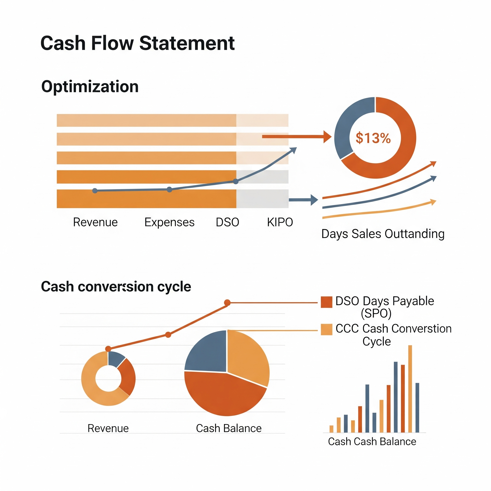

 The Challenge
Our client, a medium-sized manufacturing enterprise, faced persistent issues with cash flow, leading to difficulties in managing operational expenses and hindering growth opportunities. They needed a strategic approach to improve liquidity without compromising business operations.
Our Approach
We conducted a comprehensive analysis of their financial records, including:
- Detailed review of accounts receivable and payable.
- Analysis of expense patterns and cost centers.
- Evaluation of inventory management and procurement processes.
- Identification of redundant expenditures and potential savings.
Solutions Implemented
Based on our findings, we implemented several key strategies:
- Optimized Billing and Collections: Introduced new invoicing procedures and followed up on outstanding payments more efficiently, reducing the average collection period by 20%.
- Vendor Payment Restructuring: Negotiated extended payment terms with key suppliers, improving immediate cash availability.
- Expense Rationalization: Identified and eliminated non-essential expenditures, resulting in a 15% reduction in monthly overheads.
- Budgeting & Forecasting: Developed a dynamic cash flow forecast model, enabling the client to anticipate future liquidity needs and make proactive decisions.
- Inventory Optimization: Advised on just-in-time inventory practices, reducing holding costs and freeing up capital.
Results
Within six months of implementing our recommendations, the client experienced significant improvements:
- 25% increase in available working capital.
- Reduced reliance on short-term loans.
- Improved ability to invest in new machinery and expansion plans.
- Enhanced financial stability and peace of mind for the management.
This case study demonstrates our commitment to delivering actionable financial solutions that drive tangible business benefits.
Back to All Case Studies